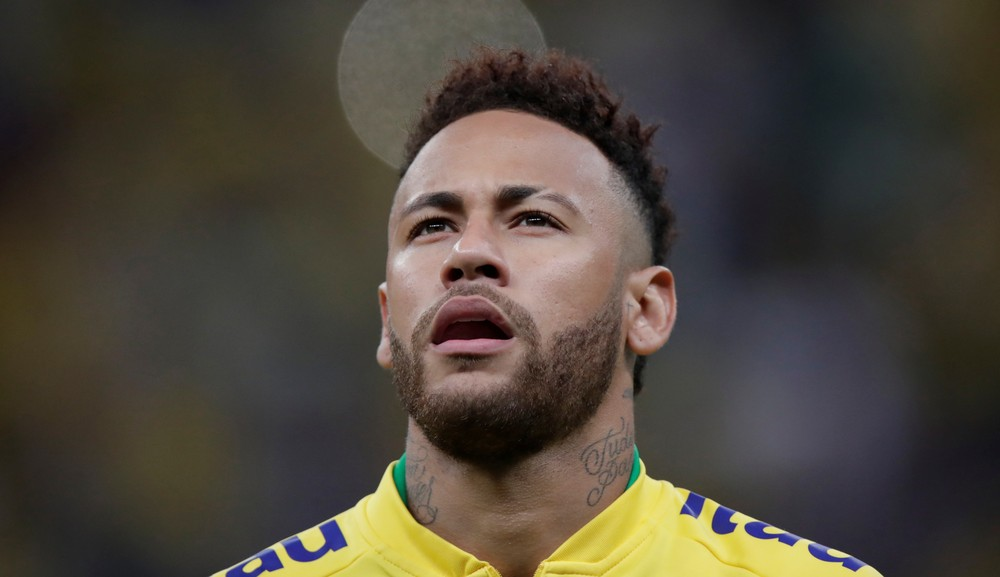

Bastidores: Neymar não esconde arrependimento por ida ao PSG, e estafe se mexe por volta ao Barça

A decisão de deixar o Barcelona e se transferir para o Paris Saint-Germain, tomada dois anos atrás, não sai da cabeça de Neymar. O craque admite a pessoas próximas o arrependimento pela troca que fez, conforme apurou o GloboEsporte.com junto a fontes com conhecimento da situação. Sem clima para voltar à França e se reapresentar ao PSG, ele está convencido de que o retorno ao Barça é a melhor opção e, com ajuda do seu estafe, tem se mexido nos bastidores, dentro do possível, para fazer isso acontecer.
A diretoria do clube catalão ainda guarda mágoa de Neymar por ele ter saído em 2017, mas entende que é importante satisfazer o desejo dos pesos-pesados do time, Messi, Suárez e Piqué, principalmente o argentino, que, além de líder técnico, tem a braçadeira de capitão. E sem esquecer, claro, do que o brasileiro agrega dentro de campo. Por isso, o presidente Josep Maria Bartomeu assumiu as rédeas da negociação. Ele tem mantido conversas com o presidente do PSG, Nasser Al-Khelaifi, pelo retorno do seu antigo camisa 11.
A negociação, noticiada na semana passada pelo GloboEsporte.com, segue caminhando, apesar de complexa. Existe bastante cautela em relação a Nasser Al-Khelaifi. Por meio do poderoso dirigente, o PSG tem feito jogo duro, não pensa em facilitar a saída, mesmo admitindo internamente negociar o jogador. Mas o entorno de Neymar trata com muito otimismo a possibilidade de ele voltar ao Barça.
Neymar tem contrato com o Paris Saint-Germain até o meio de 2022. Diferentemente do que aconteceu há dois anos, quando PSG recebeu o "ok" do craque e pagou a multa rescisória de 222 milhões de euros para tirá-lo do Barcelona, desta vez não há multa rescisória. Ou seja, o desejo do camisa 10 da Seleção não será suficiente para que ele deixe Paris. Os clubes precisam chegar a um acordo de valores para fechar negócio.
Há algumas condições impostas pelo Barça para Neymar voltar. Ele teria de reduzir substancialmente o salário em relação ao que recebe no PSG e retirar a ação que possui na Justiça contra o clube por um bônus de renovação não pago no valor de € 26 milhões. Mas nenhuma delas é vista como grande entrave pelo estafe do craque. Nesse ponto, o desejo dele fala mais alto. O atacante tem mantido contato com os amigos Messi e Suárez, e isso ajudou a aumentar a pressão em cima dos dirigentes blaugranas por sua contratação.A janela de transferência na Europa ainda está fechada, só abre em julho e vai até o fim de agosto. Ao que tudo indica, a nova novela envolvendo Neymar vai ser longa.
Velocidade, drible e finalização compõem o pacote completo de Everton Cebolinha

Jogada em velocidade pela esquerda, ele parte para cima do adversário, corta para um dos lados e ganha a disputa. Um misto de velocidade e habilidade, ousadia e alegria típicas do futebol brasileiro. O próximo passo é a finalização. Certeira, sem chance para o goleiro. A descrição se aplica com perfeição a Everton Cebolinha.

/i.s3.glbimg.com/v1/AUTH_bc8228b6673f488aa253bbcb03c80ec5/internal_photos/bs/2019/0/f/arCHKAR2qD4oGcYNjTHw/2019-06-19t020500z-2105035035-rc19174b4980-rtrmadp-3-soccer-copa-bra-ven.jpg)